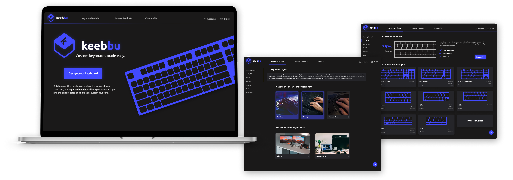
Overview
Inspired by conversations with friends invested in the hobby, I dove into researching the process of building a custom mechanical keyboard, searching for possible design opportunities. Observing a pervasive trend of beginners intimidated and overwhelmed by the complexity of the project, I aimed to create a streamlined, informative experience that guides first-timers.
Timeline
Fall 2022
9 weeks
Team
Solo class project
Skills
User Research
Product Design
Web Design
Figma
The Problem
Mechanical keyboard building is a popular and growing hobby, but novices are intimated and overwhelmed by the complexity of the process. With a vast wealth of conflicting information, hundreds of online sellers, and the many decisions a user must make to customize their keyboard, beginners are deterred by confusion and uncertainty.
How might we guide beginners through building their first mechanical keyboard?
The Solution
By embedding information within the part-picking process, helping users decide what they want from their keyboard.
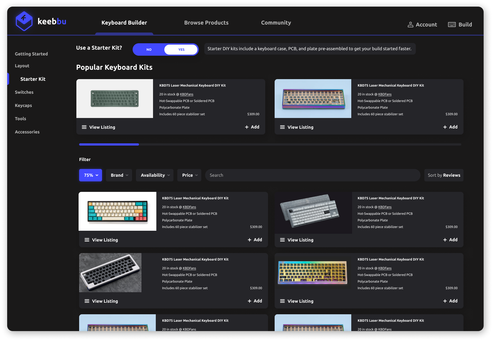
Aggregate sellers into one browsing platform
Educate users with relevant information as they go
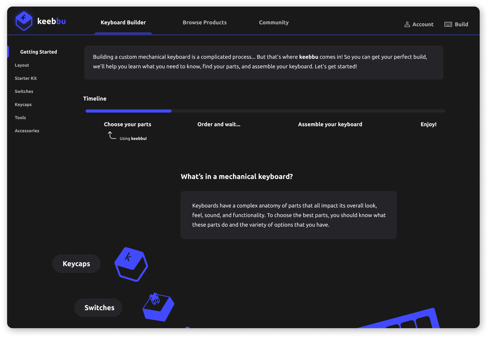
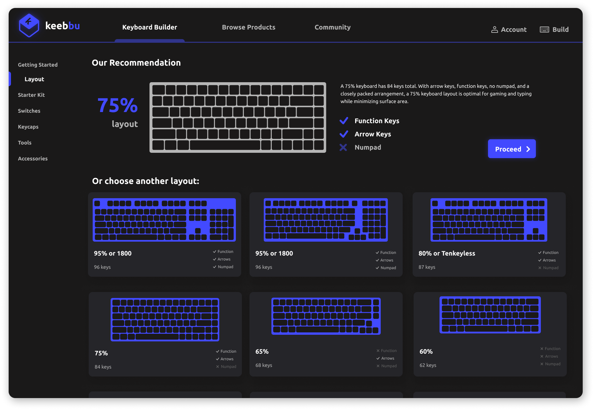
Make personalized recommendations to ease decision-making
Understanding the User
My user research started with diving into the world of keyboard building as a newbie myself. I did some online research as if I was about to build my own keyboard, searching for guides, trusted sellers, and explanations of all the different parts. Even though I learned a lot of new jargon and got an idea of the steps involved, I was still unsure if my knowledge was complete enough to build a keyboard successfully.
To gain more insights, I conducted semi-structured interviews with 3 experienced keyboard hobbyists. I asked them about their high and low points, preparatory research, and struggles they faced during the process.
Affinity Mapping
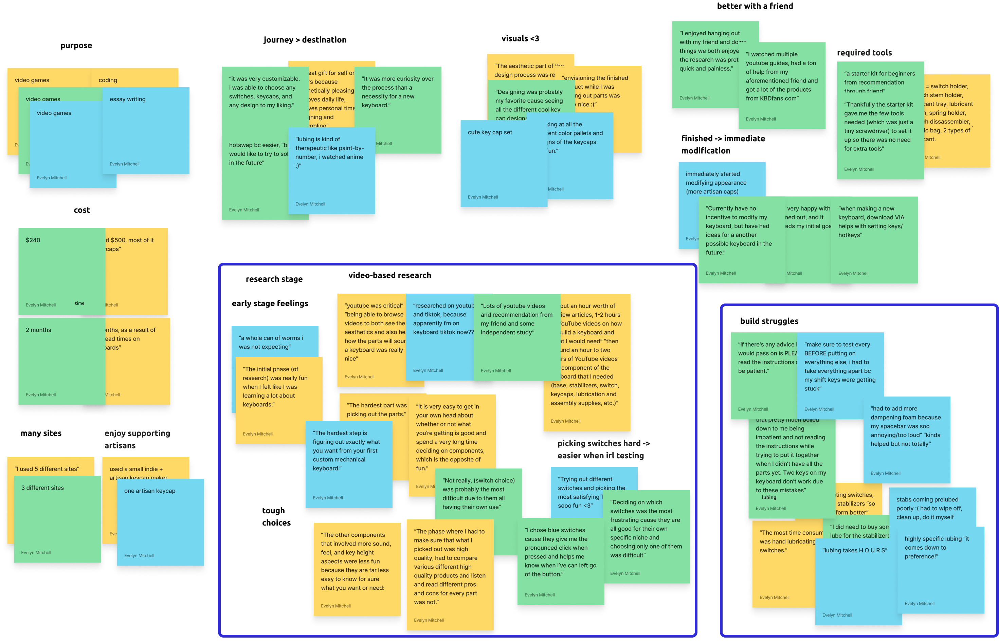
Journey Mapping
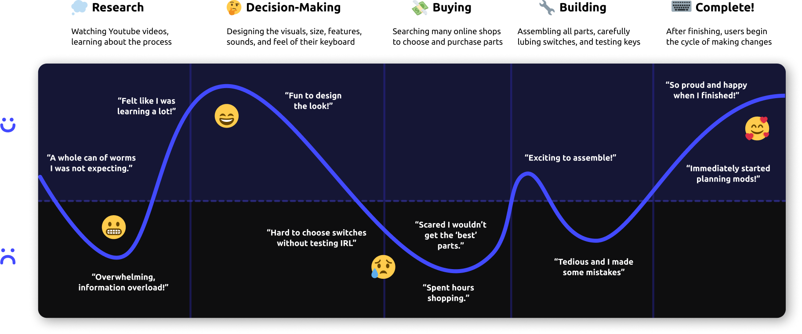
Pain Point: Research
From my users, I learned that the initial research phase became an overwhelming slog with too much to learn, and too many possible sources.
Pain Point: Decision-making
Users stressed over their choices at the final buying step, hoping they made the right decisions, and felt the need to be “perfect” and get everything right.
Midpoint Reassessment
As I moved into wireframing, I realized my user research had a crucial flaw. I had only talked to people who successfully built a mechanical keyboard, leaving out those who gave up. To identify barriers to entry for new users, I needed to include both groups. So, midway through the project, I went back and interviewed two new individuals who had tried but abandoned the process. They showed me two critical areas that caused these "Lost Opportunity" users to give up.
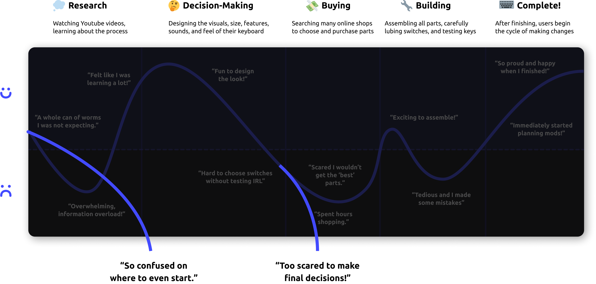
New users were scared away by confusion and uncertainty. Interviews revealed that a lack of understanding of the linear, step-by-step process made the project less pleasant, and if they were not put off by the initial deluge of information, their uncertainty deterred them at the decision-making phase, making them too scared to commit to the costs of buying their parts.
Insights and Opportunities
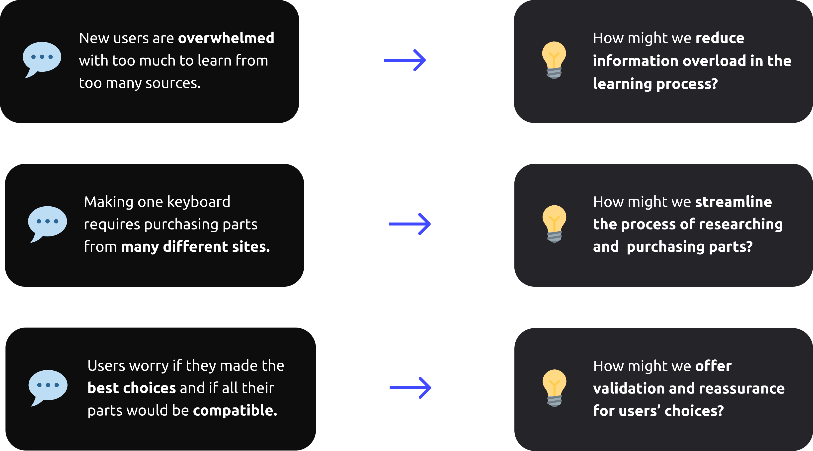
Design Development
With my strategy of a streamlined, informative part selection platform, I began ideating features and sketching possible layouts.
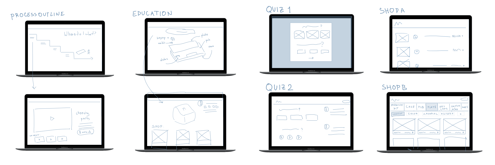
Competitive Analysis
This concept wasn’t entirely unique however; other products have attempted a similar feat of aggregating sellers in one place (KEEB and shopmech), or creating a part-picking tool (Xtrfy and Computer Orbit). So, I looked to these competitors to identify the white space and assess the strengths and weaknesses of each product.
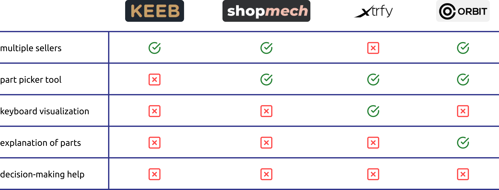
While these existing products had some of my key features, I found that very few had any sort of education on mechanical keyboards, and acted solely as a storefront for products. Computer Orbit had a one-line explanation of each keyboard part built into their part-picking tool, but still lacked detail and had no content to help users make decisions on what parts or features they might want. This gap in the market helped me define my product’s key offering:
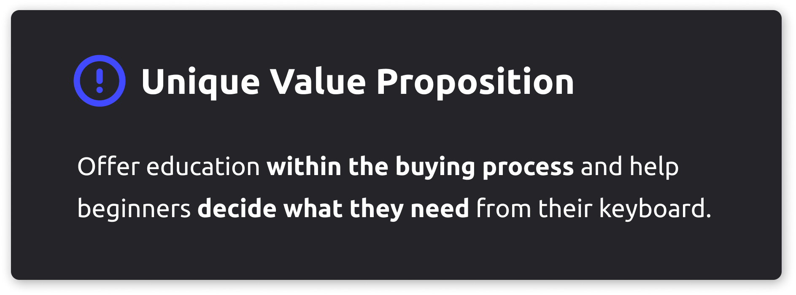
Directional Testing of Low-Fidelity Flows
With this guiding directive, I created 5 diverse low-fidelity flows of the part selection process and brought them to my users to see what worked and what didn’t, what they responded to, and what direction I should continue in.
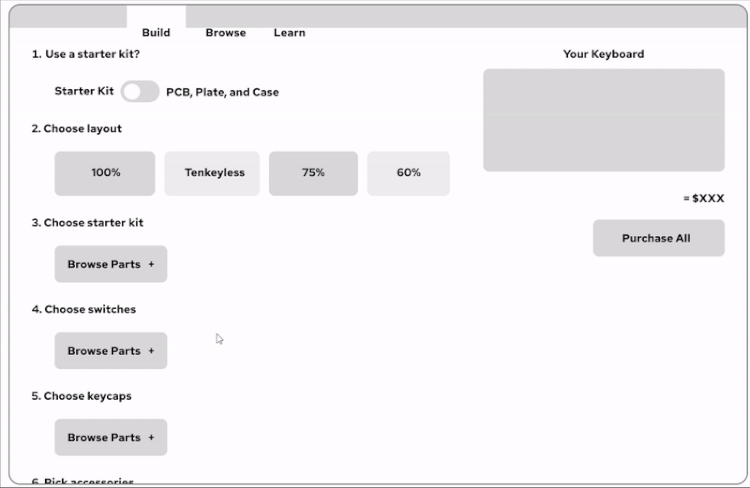
Build Version A
✅ What worked: Concise and clear summary of the experience
❎ What didn't: Too confined and directed
Some co-design- one user pointed out this interface would work well as a “cart” at the end! So I repurposed it in my final design!
Build Version B
✅ What worked: UI patterns match online storefronts and users' existing schemas
❎ What didn't: Not enough teaching- fails the unique value proposition!
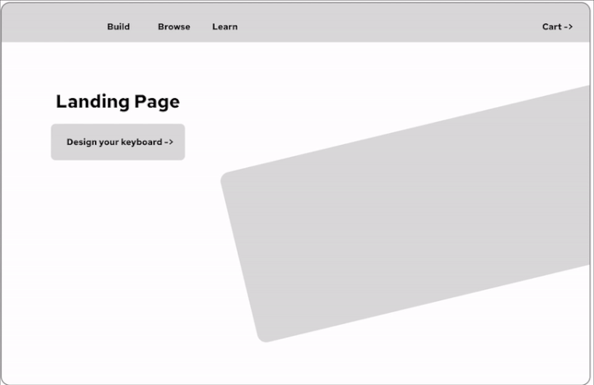
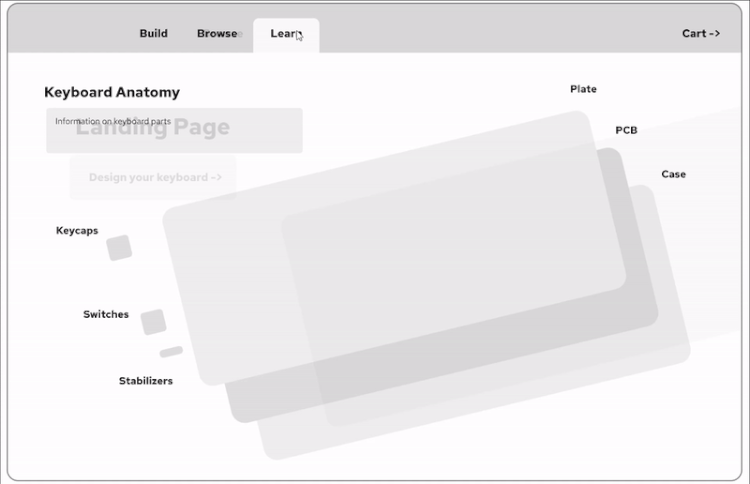
Education Version A
✅ What worked: Fun, interactive, and visual!
❎ What didn't: Not the key information- users ask "So what?"
Education Version B
✅ What worked: Tells users exactly what to do next
❎ What didn't: Embedded video learning- too distracting and time-consuming
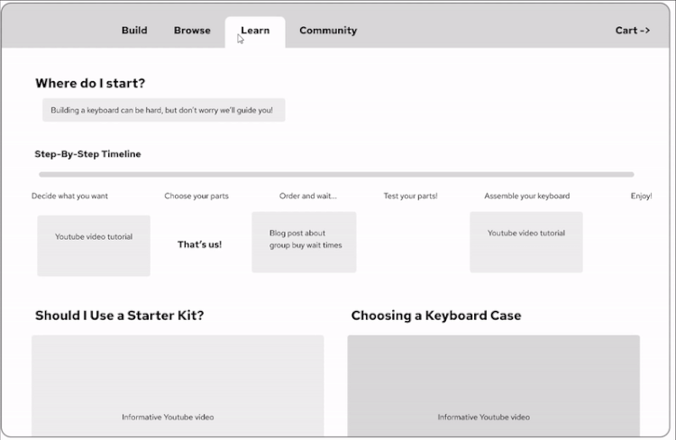
Iteration & Mid-Fidelity Prototyping
With these insights, I moved into developing a single concept, cycling through iterating and gathering feedback, elevating the visual and interactive fidelity each time.
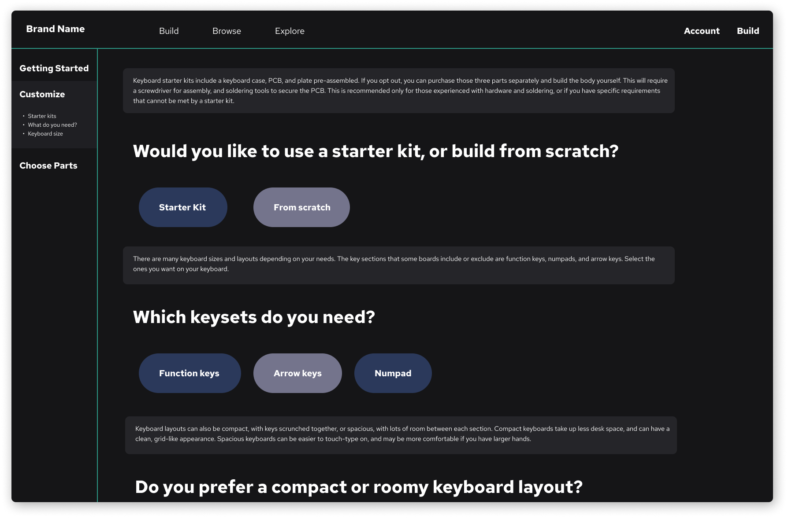
Key Insight!
For a while, the design centered around all the customization questions appearing in a single quiz-like feed. However, testing revealed that it felt more intuitive, informative, and friendly to split these questions up, asking only when it is most relevant in the process.
Brand Tone
As I iterated, the visual language of the branding took shape, and I aimed for a tech-savvy look, tactile like keyboards themselves, and with welcoming language for beginners.
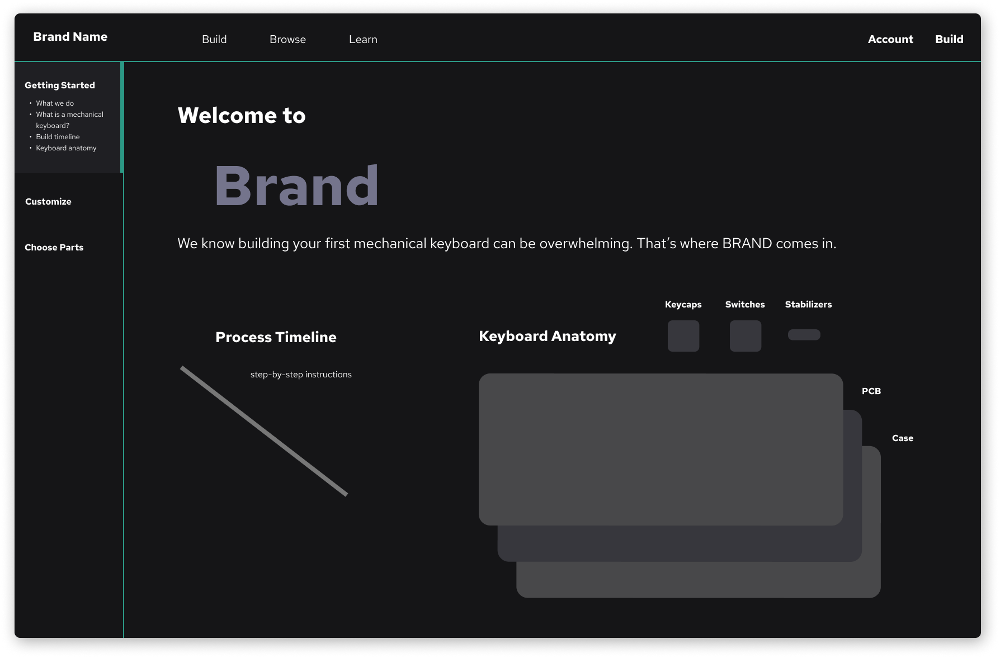
Final Design
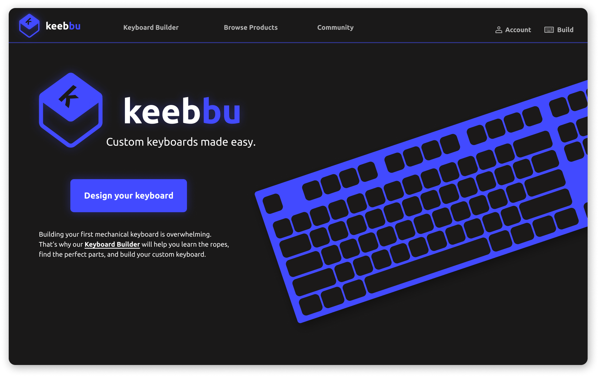

Embedded information educates users with the most relevant facts as they go
Personalized recommendations help users confidently make decisions
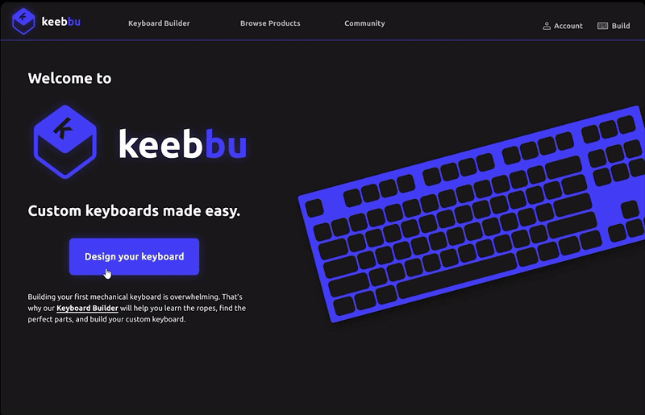

Compatibility checker validates user choices and removes doubt
Design System
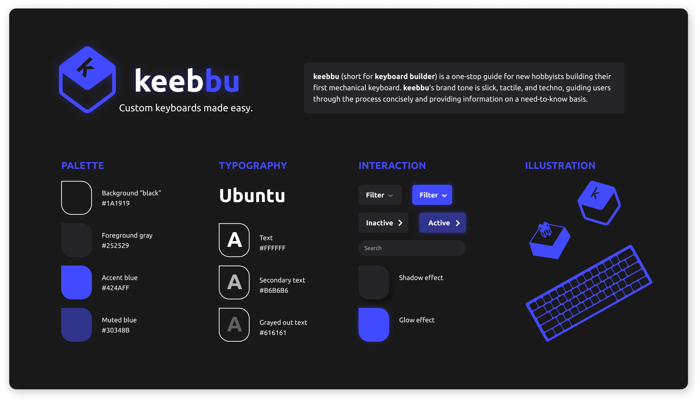
Interactive Prototype (best in full screen!)
Learnings ✨
1. Save time for hi-fi testing! I conducted really thorough directional testing with my low- and mid-fidelity prototypes in the early and middle phases of this project, and learned a ton that helped define the direction of my product. However, as I set about developing the branding, UI details, and high-fidelity prototype, I only brought snippets and pieces to my users for feedback. By the time I had a complete and interactive flow ready, I had too little time for extensive user testing. Hopefully, now that the in-class timeline for this project is completed, I’ll be able to spend some free time completing those usability tests and really nailing down a more beautiful and usable interface.
2. Don’t fixate! While I identified aggregating sellers as a useful opportunity, I think I settled a little too quickly into my concept of an online storefront. It prevented me from seeing the really useful part of what I was making — the guidance and education — and made me over-focus on the details of the part-browsing UI. In the future, I want to keep my early ideation more broad, not settling on a single platform, problem, or feature until I’ve explored a wider range of options.